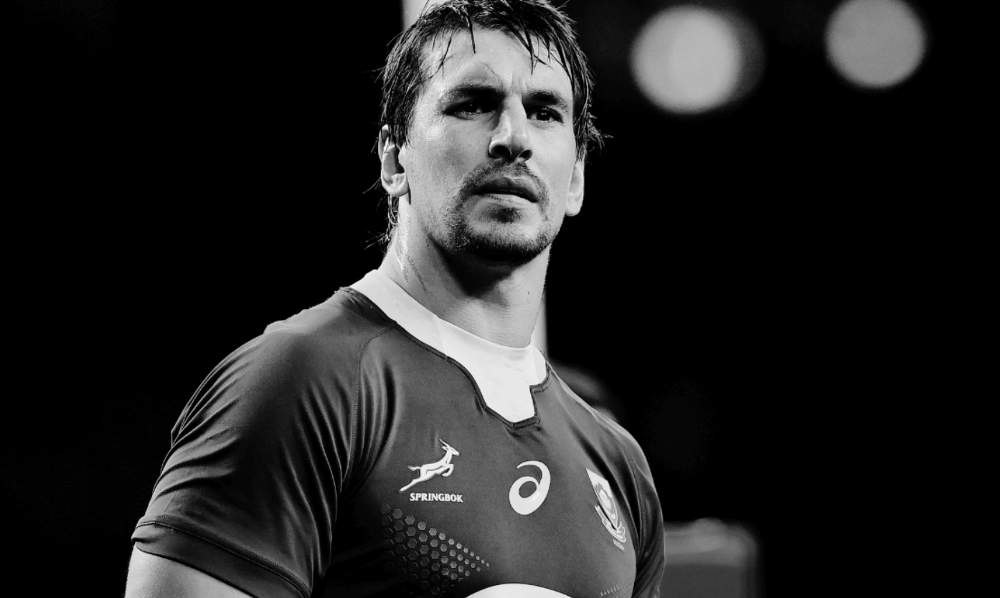
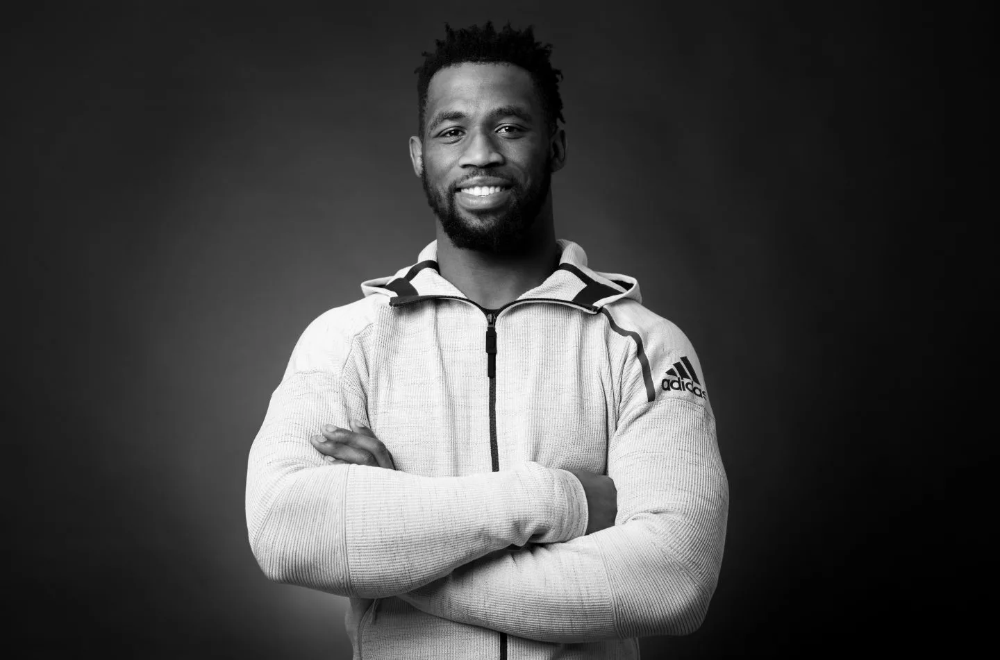

1. Antoine Dupont
Age: 25
Test caps: 35
Nation: France
Club: Toulouse
Bestowed the crown of World Rugby Player of the Year in 2021,
the recent renaissance of French rugby has largely centred around halfback Antoine Dupont.
While France are currently blessed with a raft of talented youngsters who have thrust Les Bleus back to the peak of their powers, few wield the influence Dupont has on both his team and the matches he plays in. Being central to such a significant comeback after years of dormancy deserves recognition, hence why Dupont has claimed top spot in the RugbyPass Top 100.

2.Eben Etzebeth
Age: 30
Test caps: 97
Nation: South Africa
Club: Toulon
Similarly, the impact that experienced Springboks lock Eben Etzebeth provides to South Africa cannot be questioned, especially given his output at international level last year. The towering second rower was at his physically confrontational best as he narrowed in on a century of test matches throughout 2021. Epitomising what it takes to be a hard man at the elite level of the game, no opposition forward was safe from Etzebeth’s wrath as he stamped his authority to remain among game’s the elite locks.

3. Siya Kolisi
Age: 30
Test caps: 63
Nation: South Africa
Club: Sharks
The captain behind South Africa’s World Cup success in 2019, Siya Kolisi’s influence and leadership within the Springboks squad was a significant reason behind their series triumph over the British and Irish Lions. It was also a major reason behind their exhilarating victory over the All Blacks on the Gold Coast, as was his exceptional defensive and breakdown work. It’s hard to imagine if the Springboks would be the world’s top-ranked side without Kolisi, who will no doubt be instrumental in their World Cup title defence next year.
A mountain of a man who has long been a vital component of Ireland’s recent successes, Tadhg Furlong is among the few players who is a guaranteed selection in any given World XV. That was the case last year, when he – and almost every other player on this list – was named in World Rugby’s Dream Team on the back of another fantastic year in which he started in three British and Irish Lions tests and swept the All Blacks, Brave Blossoms and Los Pumas in November. A strong scrummager and effective ball carrier, Furlong undoubtedly remains the best tighthead prop on the planet.
5. Michael Hooper
Age: 30
Test caps: 118
Nation: Australia
Club: Waratahs
Very few players, if any, throughout the world of rugby exude leadership, passion and dedication like Michael Hooper does whenever he plays for the Wallabies. Australia has enjoyed limited success since their golden era of the 1990s and early 2000s came to an end, but rugby’s youngest test centurion has constantly provided his nation and teammates with a source of inspiration every time he takes to the field at test level. That didn’t change in 2021, a year of which he earned a World Rugby Player of the Year nomination, and one could argue Hooper can feel hard done by that he wasn’t the outright winner of the award.
6. Ardie Savea
Age: 28
Test caps: 59
Nation: New Zealand
Club: Hurricanes
In a year where the All Blacks struggled to reach the lofty goals they expect of themselves, Ardie Savea stood head and shoulders above his peers as the best New Zealand had to offer. The unrelenting loose forward’s powerful ball-carrying, committed defence and immense work ethic have made him an integral player for the Kiwis, as reflected by his captaincy appointment for the Rugby Championship. If the All Blacks are to reclaim the World Cup next year, Savea will be pivotal to their chances of success.
7. Romain Ntamack
Age: 22
Test caps: 23
Nation: France
Club: Toulouse
One half of an all-star French halves combination, Romain Ntamack continues to emerge as one of rugby’s most promising young players. Still only 22-years-old, Ntamack has acted as a pillar of France’s recent rejuvenation in test rugby, having starred in a variety of matches from the No 10 jersey. Although he only played five tests this year, the class and quality of the Les Bleus star catapults him high up the rankings in an indication of his influence in the French set-up.
8. Lukhanyo Am
Age: 28
Test caps: 26
Nation: South Africa
Club: Sharks
A core member of South Africa’s 2019 World Cup-winning side, Lukhanyo Am continued to blossom into one of the game’s most dependable midfielders this year. Rock-solid on defence and supremely adept with ball in hand, Am has become a staple of the Springboks backline and has formed a tired and trusted midfield combination with Damian de Allende. With the World Cup just a year away, Am is set to play a crucial role in South Africa’s chances of retaining the Webb Ellis Cup.
9. Maro Itoje
Age: 27
Test caps: 57
Nation: England
Club: Saracens
Having been among the world’s premier players for some time now, Maro Itoje enjoyed another fruitful season in 2021. The veteran lock was a shining light in England’s below-par Six Nations campaign to become a regular test starter for the British and Irish Lions on their tour of South Africa. Itoje then capped off his year with a string of standout showings as England swept the Wallabies, Springboks and Tonga in the Autumn Nations Series.
10. Will Jordan
Age: 23
Test caps: 13
Nation: New Zealand
Club: Crusaders
With 15 tries in 11 tests, it’s easy to understand why Will Jordan was crowned World Rugby Breakthrough Player of the Year in 2021. Blessed with speed, vision and footwork, it became common nature to see the young wing slide through and around defences to run in try after try – five of which were scored in a single test against Tonga. Now a first-choice selection on New Zealand’s team sheet, another big year beckons for Jordan in 2022 as he looks to maintain his immaculate strike rate.